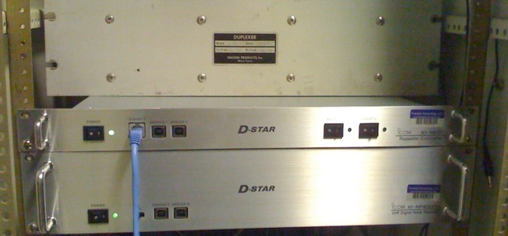

Repeater Status


ON-AIR - 147.150 (+) 114.8Hz IN / 114.8Hz OUT:
Ben Franske, K0BEN, purchased a new Kenwood commercial repeater for this machine. Currently in analog mode, this repeater supports Kenwood’s digital technology, and may soon be converted into a D-Star machine on the ircDDB network. 25-50 Watts output, balanced receiver. Covers Twin Cities 494/694 freeway loop plus 10 miles with mobiles.
ON-AIR - 444.425 114.8 IN / 114.8 OUT:
(previously on 442.875) KA0KMJ/R This is a Motorola MSF 5000 that John, KA0KMJ was nice enough to let our club use. It has 65 watts power output, and is on a commercial high-gain antenna on Moos Tower on the East Bank of the University of Minnesota. There is a flurry of activity on 444.425 KA0KMJ/R making this the second most popular UHF repeater in the Twin Cities. (Only behind 444.100 W0EF/R on the Interchange Building in the west metro.) Tune in and talk to the young hipsters. Be forewarned, however; there's no round-table or over-identification here! This machine has EchoLink. Echo link node number 192344. On-air for half a decade.
ON-AIR - 443.425 (+) W0YC B D-STAR:
Jan 10, 2012: Now running ircDDB of the D-Star world-wide gateway software, this system owned by Ben Franske and parts from Matt Genelin has limited coverage around campus. Gateway fully functional. We no longer are going to support or use the Icom gateway software, as it’s a nightmare to administrate.
September 12, 2008: Now running version 2.0 of the D-Star world-wide gateway software, (some updates needed) this system owned by Ben Franske and parts from Matthew Genelin now has better coverage. We have upgraded the duplexer so that it now covers similar to a ham-radio mobile radio at a noisy (high up) site. Mobile coverage of Mpls, Edina, Shoreview, is 80%. Voice, however, seems to be having troubles as a design flaw in the UHF RF deck is causing the transmitter to munge up the synch perceived at the receiver. Call signs come across as does text messaging, and gateway traffic from call signs outside the area is a near daily occurrence. December 14, 2007: (previously an analog machine) W0YC This is a Icom D-star system. Gateway coming Jan / Feb 2008. It has 45 watts power output, and is on a commercial high-gain antenna on Moos Tower on the East Bank of the University of Minnesota. When 444.425 is active, 443.425 also has users many evenings during the week. Ben Franske is the owner of the equipment.
ON-AIR - 53.150:
W0YC/R Transmitter re-transmits 147.150 repeater onto 53.15 from St. Paul Campus. 2W PEP -- but nice coverage site. No receiver; just a transmitter. (Installed April 18, 2005).
OFF-AIR - 223.900:
As of December 15, 2007: Project cancelled. Repeater disposed of. W0YC is in the process of letting this channel and coordination go.
Status of our club's affiliated commercial repeaters:
ON-AIR - METRO 1: 462.5625 (=) 114.8hz in / 114.8hz out:
Simplex. Always simplex. Currently is Family Radio Service (FRS) channel 1 with a 114.8 Hz PL tone.
NO ACCESS - METRO 2: 461.725 (+) 100.0Hz in / 100.0Hz out:
Located near the Minneapolis / St. Paul International Airport, METRO 2 is one of a family of commercial repeaters that are used by hams and local agencies in the area for emergency service and other commercial activities.
Since leaving our radio club in November 2008, Don Rice no longer allows our membership to use this channel.
NO ACCESS - METRO 3: 452.025 (+) DPL 346 in / DPL 346 out:
As of November 30, 2007: old metro 3 was on 452.825 dpl 351 / new metro 3 is on 452.025 dpl 346. Located at East Bank University of Minnesota campus, METRO 3 is one of a family of commercial repeaters that are used by hams and local agencies in the area for emergency service and other commercial activities. METRO 3 pre December 2007 was 452.825 dpl 351. The old metro3 has been decommissioned.
Since leaving our radio club in November 2008, Don Rice no longer allows our membership to use this channel.
ON-AIR - METRO 4: 462.650 (+) 146.2Hz in / 146.2Hz out:
Located at St. Paul University of Minnesota campus, METRO 4 is one of a family of commercial repeaters that are used by hams and local agencies in the area for emergency service and other commercial activities. METRO 4 is a GMRS repeater with a license. Shane Young K0SEY provides two tone paging on this repeater.
NO ACCESS - METRO 5: 452.625 (+) 100.0Hz in / 100.0Hz out:
Located at St. Paul University of Minnesota campus, METRO 5 is one of a family of commercial repeaters that are used by hams and local agencies in the area for emergency service and other commercial activities. During the December 2007 snow emergencies in St. Paul and Minneapolis, the City of Saint Paul has used Metro 5 to help write tickets and tow cars from the city streets.
Since leaving our radio club in November 2008, Don Rice no longer allows our membership to use this channel.
NO ACCESS - METRO 6: 460.775 (+) 114.8hz in / 114.8 Hz out:
Located near the Minneapolis / St. Paul International Airport, METRO 6 is one of a family of commercial repeaters that are used by hams and local agencies in the area for emergency service and other commercial activities.
Since leaving our radio club in November 2008, Don Rice no longer allows our membership to use this channel.
Status of our club's tactical (for rent-able to other ham clubs and tactical events) repeaters:
ON-AIR - 443.425 (+) 114.8hz in / COS out: CHERRY PASSION
Jan 2012: N0YNT/CP is on the air with remote base at a new site in Oakdale, MN. We have observed that the remote base now can key up a 147.150 repeater in Medford, WI. The action committee is getting together to change the PL tone on the remote base radio and w0yc/147.150 repeater so that this issue goes away.
Old news: N0YNT/CP or W0YC/CP or W0ANA/CP (call signs vary for coordination and tactical purposes) on air as of October 1, 2008 using the antenna formerly used by N0BVE/R 444.325 on St. Paul campus. The CP stands for Cherry Passion, a flavor of Tick Tack-Brand Candy that is sold in America. All of our tactical repeaters, two at present, are named after Tick-Tacks Brand Candy because they are _tick-tactical repeaters_. Each tactical repeater is available for rent for cost of moving and setting up the machine for gopher radio and other amateur radio club events. The two tactical repeaters, Cherry Passion and Orange, are capable of operating as 1. standalone repeaters on different channels, 2. Cherry Passion as a receive site for Orange, 3. Orange as a receive site for Cherry Passion, 4. Cherry Passion acting as a receive site for orange, Orange relaying to the main 444.425 KA0KMJ/R, see above, for remote deployment in the field. The receivers also have a few user-radio channels programmed in for testing and technical maintenance to non-tactical repeaters. E.G. The user-radio-programming channels are used when talking to fixed repeaters and for testing. Cherry Passion and Orange represent three years, since 2005, of work by the Gopher Amateur Radio Club and its members on delivering a rentable tactical, field-ready repeater system for public safety and emergency events.
OFF-AIR - 444.425 (+) 100.0Hz in / COS out: ORANGE
N0YNT/OR or W0YC/OR or W0ANA/OR (call signs vary for coordination and tactical purposes) on air as of October 1, 2008 using the antenna on Shepherd Labs, East Bank Campus U of M. This is a low-coverage, campus-coverage repeater on the same channel as a popular wide-area-coverage machine using a different tone. The OR stands for Orange, a flavor of Tick Tack-Brand Candy that is sold in America. All of our tactical repeaters, two at present, are named after Tick-Tacks Brand Candy because they are _tick-tactical repeaters_. Each tactical repeater is available for rent for cost of moving (gas) and setting up the machine (gas) for gopher radio and other amateur radio club events. The two tactical repeaters, Cherry Passion and Orange, are capable of operating as 1. standalone repeaters on different channels, 2. Cherry Passion as a receive site for Orange, 3. Orange as a receive site for Cherry Passion, 4. Cherry Passion acting as a receive site for orange, Orange relaying to the main 444.425 KA0KMJ/R, (see above), for remote deployment in the field. The receivers also have a few user-radio channels programmed in for testing and technical maintenance to non-tactical repeaters. E.G. The user-radio-programming channels are used when talking to fixed repeaters and for testing. Cherry Passion and Orange represent three years, since 2005, of work by the Gopher Amateur Radio Club and its members on delivering a rentable tactical, field-ready repeater system for public safety and emergency events.
As of September 1, 2009 this machine is sitting idle on Shepard Labs, a low-coverage campus site. It’s a cold-backup for 444.425 114.8 ka0kmj/r that is normally on the air.
As of Jan 1, 2012 the machine is sitting idle at Matt’s home in Saint Paul.
Status of other repeaters with affiliated groups and members:
ON-AIR - 146.670 (-) 114.8hz in / 114.8hz out:
The Anoka County Radio Club maintains the 146.670 W0YFZ repeater in Anoka. Located at Paul Parkway and Central Ave. in Blaine, MN (northern suburb of Minneapolis, MN) this machine covers the Northern suburbs. There are many receive sites; check the anoka county webpage for more information.
This machine is having coverage troubles as of January 1, 2009. The group is ordering a new (replacement)voter for the failed voter that is currently in use. Matt to install once the group gets one in.
ON-AIR - 443.000 N0YNT (+) 118.8Hz in / 118.8Hz out:
This repeater lives in Minneapolis (near I-94). 443.000 has about 20W PEP into a dual-bander antenna. You can hear hams in the Twin Cities kerchunking this repeater and the 443.000 (PL 100.0hz) in Chaska from time to time to see which repeater is "louder" than the other. Don, Matt and Ruben use this machine from time to time when working on repeater / radio projects. It’s a nice quiet channel for local-coverage events when 444.425 gets busy.
Jan 1, 2012: This Motorola MVP repeater was moved to Lino Lakes, MN on a low-coverage site. Spring plans to raise antenna, fix feed line issues with this repeater and link it back to the metro.
Status of all D-Star systems within mobile coverage of Minneapolis and St. Paul:
ON-AIR - 443.425 (+) W0YC B D-STAR:
Located 200 feet up on East Bank Campus, please see above for other technical information and system status.
ON-AIR - 145.150 (-) K0FVF C D-STAR:
Located on a 100 foot+ tower in Golden Valley (Hwys 55 and Hwy 100>) this system is quite possibly the best-coverage stand-alone d-star system in the Twin Cities. It shares the site with 442.900 (below). When nasa missions are up, this channel is used as a one-way broadcast of NASA Select TV audio on FM, and has a nice signal into western Wisconsin. (So, when NASA is flying, the D-Star machine goes off-air.) This is a stand-alone, no-gateway machine.
ON-AIR - 442.900 (+) K0FVF B D-STAR:
Located on a 100 foot+ tower in Golden Valley (Hwys 55 and Hwy 100>) this system is quite possibly the best-coverage stand-alone d-star system in the Twin Cities. It shares the site with 145.150 (above). This machine stays on the air when nasa missions are up.This is a stand-alone, no-gateway machine. Users, of course, can link to 145.150 with D-Star user radios at a whim.
UNVERIFIED - 442.775 or 443.775 (+) W0ANA B D-STAR:
Presently in testing phase in Blaine (a low-coverage home site) this is the machine operated by Anoka County Ares. Last report has no gateway, waiting on coordination for a water-tower site in Fridley, Blaine or Ham Lake. Unknown permanent home as of September 2008.
OFF-AIR - 144.530 (-) W0ANA C D-STAR:
Presently in testing phase in Blaine (a low-coverage home site) this is the machine operated by Anoka County Ares. Last report has no gateway, waiting on coordination for a water-tower site in Fridley, Blaine or Ham Lake. Unknown permanent home as of September 2008.
Could not find this repeater on the air near Dave’s home - listing it off air August 2009.
(Thanks Matthew Genelin, n0ynt.)
(Thanks Matthew Genelin, n0ynt.)
Real Time Information - just in time as of October 11, 2009